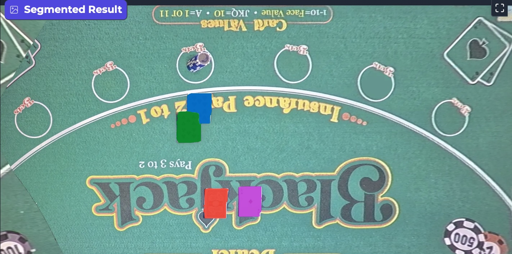
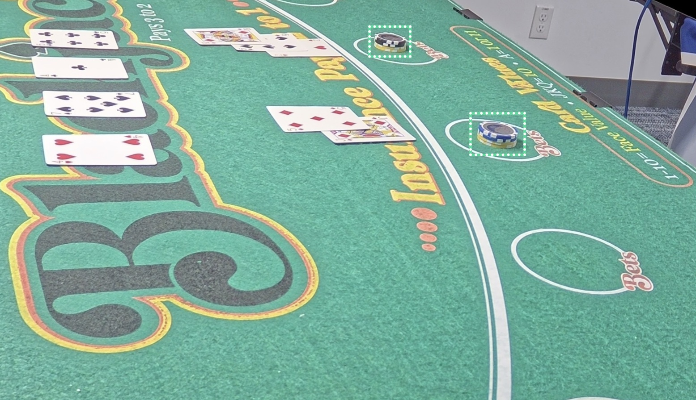
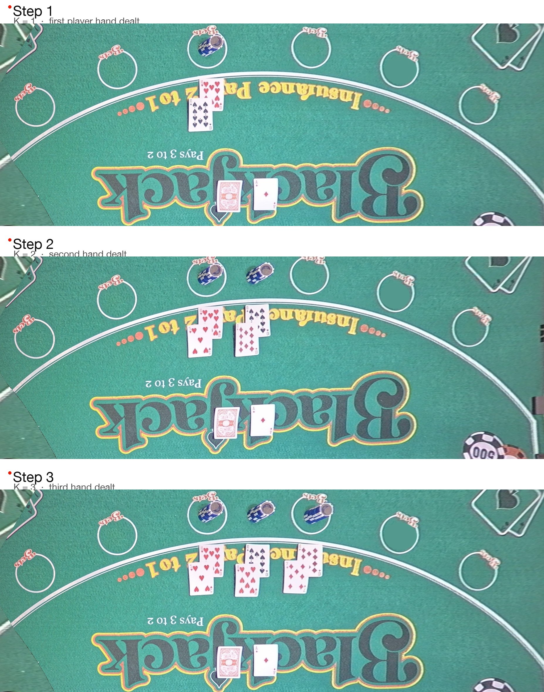

Live blackjack tables generate dense, fast-moving visual data. Cards are dealt, chip stacks are added and removed, players signal doubles and splits, and dealers run 30 to 100 games per hour at every table. Most of these rounds complete without issue. Some need detection of fraud, support for dynamic side-bet pricing, and data-driven dealer assignment.
In an era where edge AI is often treated as a deployment afterthought, we built a real-time computer-vision platform specifically for the table-game floor. This post describes how the platform perceives every card placed, every chip moved, and every player action — and how that single perception substrate powers three downstream products: fraud detection, behavioral profiling for dynamic side-bet pricing, and data-driven dealer assignment.
Scale of the platform
The platform is deployed across 101 live blackjack tables in Asia. Each table is instrumented with two side-view cameras and a 4-GPU edge device that runs the entire perception and analytics stack on-premise. There is no cloud round-trip. The regulatory environment for table-game data requires on-premise inference, and the per-frame latency budget would have ruled out cloud anyway.
A two-person team — one ML engineer and one hardware engineer — designed, trained, and shipped the platform end-to-end over roughly a year and a half. No PM, no designer, no separate ML lead. We owned scoping, build, deployment, debugging, and customer onboarding ourselves.
The platform runs four perception components in parallel: card segmentation, two-headed card classification (rank and suit), chip detection (location, denomination, count), and keypoint-based calibration. Three downstream products consume their output: fraud detection through end-of-game reconciliation, behavioral profiling for dynamic side-bet pricing, and dealer-efficiency scoring for assignment decisions. An on-device LLM lets pit bosses query game state in natural language, in real time, on the floor.
Designing the trigger
The first interaction-design decision was how the system would know when to start processing a round.
The initial sketch had a button on the dealer's side that would start the workflow when pressed. The dealer conversations killed that idea immediately. Dealers earn a flat hourly wage and depend on tips, which scale with games per hour. Any extra interaction degrades that primary metric. A button-driven trigger would have eroded adoption from day one, even with a perfect model behind it.
We pivoted to an event-driven trigger using card placement. Before any card is dealt, players are still adjusting chips and bets. The instant the first card hits the felt, the round has begun and — per blackjack rules — chips are no longer added or removed except for explicit events like doubles, splits, or side bets. Detecting the first card on the table is an unambiguous, dealer-effort-free signal that the round has started.
The trigger choice looks small on paper. It anchored every downstream system because it forced the platform to be reactive to game events rather than dealer-directed.
Card recognition architecture
Card recognition runs in three stages: segmentation, two-headed classification, and downstream association. The architecture went through two major iterations before reaching production quality.
Phase 1: Object detection
The first card model used object detection. We selected OD for two reasons. Detection models are lightweight enough to fit the edge device's per-component inference budget, and the annotation is cheap — four points per bounding box. The annotation cost mattered because the ML engineer was also the labeler.
In test conditions, OD worked. In production, it broke down. Cards on a real table are not neatly stacked or aligned. They get fanned, overlapped, partially occluded, and dealt at irregular angles. Anchor-box detection cannot reliably resolve overlap. Partially occluded cards were frequently missed, and the model would sometimes identify an entire card pack as a single object rather than distinguishing the cards within it.
Phase 2: Segmentation
We pivoted to segmentation, accepting the higher annotation cost. Polygon-mask labeling takes minutes per card instead of seconds per box. In exchange, segmentation gives the model dense per-pixel signal that handles overlap gracefully. Severely overlapping cards separated cleanly. Card identification went from "works most of the time" to reliable enough to trigger the rest of the pipeline.

Production card segmentation accuracy reached approximately 99%.
Phase 3a: ResNet classification
With cards reliably segmented, the next step was identifying which card was placed. We split classification into two independent heads — one for rank (A, 2-10, J, Q, K), one for suit (spades, clubs, hearts, diamonds). Modularity was the motivation. Some game variants require both rank and suit; others require only rank. Splitting the heads lets us disable a head per variant, ship updates independently, and keep each model small.
The first classifier used a ResNet backbone. For a structurally simple classification problem on a constrained edge device, this was the default. We labeled approximately 1,000 to 1,200 images, split into train, validation, and test. Test accuracy reached 95–96%.
In production, accuracy dropped to approximately 90%. Misclassifications were frequent.
We pulled attention heatmaps to diagnose. The ResNet was focused on the center of the card and effectively counting pip symbols — counting ten heart symbols on a Ten of Hearts, for example. This worked on the in-distribution test set, where most cards were canonically presented. It broke down whenever cards were viewed from a side angle, partially occluded, or oriented unusually.
The diagnostic insight was that the card itself prints the answer in a known location. The rank and suit indices in the corners are visible regardless of how the rest of the card is occluded, because dealers themselves need to read them to play. The ResNet was not learning to look there.
Phase 3b: Vision Transformer classification
The natural alternative was to detect the corner-index region, crop to it, then run a small CNN classifier on the crop. We considered and rejected this approach. In real play, cards arrive at arbitrary orientations. The corner-detection step is not a deterministic crop — it requires its own pose-aware model. This adds latency, another source of error, and a compounding pipeline.
We tested a fine-tuned Vision Transformer instead. ViTs attend globally, looking at every patch of the image rather than concentrating on the center. Heatmaps confirmed the change in behavior. ViT attention concentrated on the top-left or top-right rank/suit indicator depending on card orientation. Single stage, no pose detector needed.
Production accuracy recovered to 95–97%, matching test accuracy this time. End-to-end, the ViT path was faster than the multi-stage cropped-CNN alternative we would have needed to make the ResNet path work. Per-inference the ViT is heavier, but eliminating the pose-detection step yielded a net win on latency and accuracy.
Chip detection architecture
Chip detection identifies stacks on the table, classifies their denominations, and counts the chips in each stack. The model is a custom multi-task detector with three output heads:
- Localization — produces stack bounding coordinates (the two opposite corners of the stack's footprint).
- Denomination classification — identifies the chip color and edge pattern, which together map to a specific dollar value.
- Count estimation — produces an integer estimate of how many chips are in the stack.
For each detected stack, the model outputs a tuple of (location, denomination class, count estimate). The total stack value is computed as count × value_per_denomination. Summed across all stacks in the betting region, this yields the total bet value at any moment.
Localization is retained even though counting alone would not require it. The reason is downstream player association. The system needs to know not just what chips are on the table but where, in order to identify which player owns which stack, resolve doubles (a second chip stack placed next to a card stack), and resolve splits (a new chip stack added with a new card stack).

Chip detection runs on the raw side-view camera frame, not on the top-down warped view used by the rest of the perception stack. Homography warping distorts vertical structures, which corrupts the count for stacked chips. Keeping chip detection in the native camera frame preserves the geometry that matters for stack-height estimation. The side-view alone was sufficient to drive production count accuracy to approximately 98%.
Player–chip–card association
Counting chips and reading cards is not enough. The system has to associate each card stack and each chip stack with a specific player.
This is harder than it sounds. A doubled hand has one card stack but multiple chip stacks placed adjacent to each other. A split hand has two card stacks and two chip stacks, and the two stacks belonging to one player can sit physically adjacent to a different player's stacks.
Deriving K from the game rules
We solved association with K-means clustering. The interesting choice was how to set K.
Blackjack provides a clean invariant. Chip stacks can be added at multiple points in a round — the original bet, a double, a side bet. New card stacks are added only on splits, and a split always brings its own chip stack. So the number of card stacks in a frame equals the number of distinct player hands at the table:
K = number of card stacks in the current frame.
This value comes directly from the segmentation output. K is not a tuned hyperparameter; it is derived from the game state every frame. The upstream model fixes it for free.

Anchoring at the begin state
K-means groups chip stacks to card stacks. The second half of association is mapping each (cards, chips) cluster to a specific player seat. A state-machine service handles this. The service maintains three explicit game states:
- Begin state — before any card is dealt. Chips sit in defined per-player betting zones; spatial ambiguity is minimal.
- In-process state — cards are being dealt, additional chip placements (doubles, splits, side bets) may occur, and the round is in motion.
- End state — payout and settlement. The round closes and metadata is committed downstream.
Player association is anchored at the begin state, when ambiguity is lowest. Once the first card hits the felt, the system locks the chip-stack-to-player mapping using the originally anchored coordinates.
After that, association is propagated forward through the round using spatial proximity to those anchored coordinates within a delta threshold. The system does not re-cluster from scratch every frame. Chips do not teleport between players mid-round, so the geometry of the begin state remains a strong prior throughout. This made association robust to per-frame perception noise in a way naive per-frame clustering would not have been.
Calibration and homography
Real-world deployment surfaces problems that do not appear in test environments. Cameras get bumped. Drinks get spilled. Purses block lenses. The calibration pipeline handles these continuously.
Keypoint detection
Every incoming frame first hits a gateway service that does light preprocessing and routes it to a keypoint detection service. The keypoint service detects 20 reference points on the felt. The validity threshold for the current calibration is at least 10 of 20 keypoints visible.
This gives three operating regimes:
- Calibration valid — at least 10 keypoints detected, all in expected positions. The frame proceeds through the rest of the pipeline.
- Calibration drifted — at least 10 keypoints detected, but in shifted positions. The camera has moved; the system triggers a recalibration request.
- Insufficient signal — fewer than 10 keypoints detected. A purse, drink, or other occlusion is blocking the view. The system deliberately stops processing for that table.
The last regime is intentional. Continuing to run perception when the calibration is invalid would produce garbage downstream output. Graceful degradation is a first-class design property, not an afterthought.
Recalibration itself is deferred. When a recalibration request fires during a live round, the system queues it and waits for the natural gap between rounds — defined as the moment no cards are observed on the table. State-aware deferred maintenance was a direct consequence of the dealer research: never interrupt a live game.
Felt as marker
We did not add markers to the felt. Casino felts are already heavily printed — logos, advertisements, betting circles, side-bet text, branding. Those existing visual features serve as the keypoints. Each felt design has its own unique keypoint signature.
This was a major operational advantage. The incumbent technology — RFID-based chip tracking — required days of downtime to retag and recommission for a new felt. Under our system, onboarding a new felt takes 15 to 20 minutes: take one image from each camera, label the 20 keypoints, retrain the keypoint detector for that felt, push the updated model.
Each physical table is mapped to a felt ID, which is in turn mapped to its own keypoint detector and reference coordinates. The system always knows which detector to use for which table.
Side-view to top-down homography
Once keypoints are validated, the system computes a homography matrix that converts each side-view camera frame into a synthetic top-down view. Working in a fixed geometric reference frame improves segmentation accuracy (cards are presented in consistent orientation), improves classification accuracy (cards are in canonical view), and makes distance reasoning between objects trivial in a known coordinate system.
This calibration plus homography approach earned the platform a provisional patent.
As noted earlier, the top-down view is used for card segmentation, card classification, and scene-distance reasoning. The raw side-view is used for chip detection, because homography assumes a planar world and chip stacks are not planar.
![Block diagram of the edge perception pipeline. Camera frames enter a Gateway service. Gateway validates keypoints via a Calibration component, then routes warped top-down frames to a Card workflow (segmentation + ViT rank/suit) and raw side-view frames to a Chip workflow (location, class, count). Both workflows feed K-means clustering keyed on the card-stack count, which feeds a game-state machine with begin/in-process/end states, which commits per-game metadata to a DB or CMS. A separate flow lets a Pit boss send natural-language queries to an on-device LLM that looks up the DB and replies.](assets/pipeline-diagram.svg)
Fraud detection
Fraud detection runs on top of the perception substrate. The mechanism is mathematical reconciliation at game checkpoints.
At the end of every game, the system has a complete record of the initial bet, every game-state transition (cards dealt, doubles, splits, side bets), and the expected payout per the rules. From this it can compute what the dealer should pay out, what the player should receive, and what the chip value remaining on the table should be. If the observed end-of-game state does not match the calculated end state, the game is flagged.
The same reconciliation applies to cash-buy events. A player gives the dealer cash, and the dealer issues an equivalent value in chips. If the cash amount and the chip-stack value do not match, an alert is raised.
Per-table thresholds
The interesting design problem in fraud detection is not the model. It is the threshold.
When an alert fires, the casino's response process is: pause the game, send a runner from the IT or surveillance team, review the relevant frames on a tablet, cross-reference with the casino's surveillance footage, and make a determination. That takes 15 to 20 minutes of paused gameplay per alert, regardless of stake level.
The value of catching the fraud varies enormously across tables. At a high-stakes table where chips are worth millions, paying 20 minutes of investigation cost to verify a possible fraud is obviously worth it. At a low-stakes table where chips are five or ten dollars, the cost of pausing the game dwarfs the value of the chip you might recover. False positives quickly create alert fatigue and erode pit-boss trust in the system.
The precision/recall trade-off is not a global property of the model. It is a function of the per-table economics of false positives and false negatives.
The threshold is therefore a per-table parameter, keyed off the table ID that already existed in the system from the felt-mapping infrastructure:
- High-stakes tables — lower threshold, optimize for recall, accept some false positives because the upside of catching real fraud is enormous.
- Low-stakes tables — higher threshold, optimize for precision, supplemented by a windowed rule. A single anomaly is noise. Roughly 10 anomalies within a 15-minute window triggers an alert regardless of magnitude.
Thresholds are tuned per casino in collaboration with the casino's compliance team. Initial tuning happens in the dealer-training environment — a real-game simulation with no real money on the table, used as a staging tier before pushing to live tables.
Dealer assignment
Pit bosses traditionally assign dealers to tables based on intuition: seniority, favoritism, randomness. The casino's fundamental revenue lever is games per hour, so there was a clear opportunity to make assignments data-driven.
Scoring inputs
The dealer score combines three observable signals captured by the perception substrate:
- Games completed per hour during the dealer's shift window. Dealers typically rotate every two hours; the exact cadence varies by casino.
- Frequency of tipping. This is a satisfaction proxy. We deliberately do not use tip value because that scales with table stakes (a high-stakes dealer will receive larger tips by default) and player generosity. Frequency normalizes for both.
- Repeat-player attraction. Do specific players seek out this dealer when they return? Strong signal of customer relationship.
Pit bosses use the combined score to match high-scoring dealers to high-revenue tables.
Fairness constraint
When we first shipped this module, casino leadership loved it: better data, better assignments, better revenue. Dealers pushed back hard.
The reason came clear after we revisited dealer compensation. Dealers earn a flat hourly wage plus tips, and tip income depends heavily on table stakes. By algorithmically optimizing assignments for casino revenue, the system was implicitly redistributing tip opportunity — and was doing it without consulting the people most affected. Dealers experienced this as punitive.
We made two changes.
First, we added a round-robin fairness constraint. The constraint guarantees that every dealer rotates through high-stakes tables over time, even when pure optimization would not have placed them there. The system still optimizes for casino revenue, but within a constraint set that respects dealer equity.
Second, we reframed how assignments were presented. Instead of "the algorithm has scored you for table 4," the framing became "your expected tip income on this table is +X% based on the active player mix." Same underlying decision, different framing. Dealer acceptance went up significantly because the dealer could see the upside.
The buyer signs the contract. The operator decides whether the system actually delivers value.
System topology
The full pipeline runs on a 4-GPU edge device deployed inside the casino. GPU allocation is roughly:
- GPU 1 — chip detection model.
- GPU 2 — card segmentation.
- GPU 3 — rank and suit classifiers.
- GPU 4 — an on-device LLM.
The on-device LLM was a later addition, driven by customer feedback. Not every casino has its own casino management service (CMS), and even those that do find that piping JSON metadata into a CMS to query small statistics is a friction point. The LLM lets pit bosses query game state directly in natural language, in real time, on the floor:
- "How many games on table four in the last hour?"
- "Which side bets are seeing the most action tonight?"
- "Who are my top three highest-stakes players right now?"
End-to-end, every frame flows through: gateway → keypoint detection → calibration check → homography warp (cards only) → segmentation and chip detection in parallel → K-means clustering → game-state machine → database → CMS or on-device LLM.
Impact
Across 101 deployed tables in Asia:
| Metric | Production |
|---|---|
| Card segmentation accuracy | ~99% |
| Card classification accuracy | 95–97% (after ResNet → ViT) |
| Chip count accuracy | ~98% |
| Confirmed monthly fraud incidents | ~40% reduction post-deployment |
| Side-bet revenue uplift (one client) | ~4% (~$3M incremental annual revenue) |
| Overall revenue uplift | ~4–5% across deployed tables |
| Felt onboarding cost | 15–20 min (vs. days for the RFID incumbent) |
The platform demonstrates how a single perception substrate can power three operationally distinct products on the same hardware. Card recognition, chip detection, and player association feed fraud detection, dynamic pricing, and dealer assignment without duplicating the upstream pipeline.
This unified architecture is what allowed a two-person team to ship a multi-product platform. Each downstream product reuses the same perception components, so adding a new table type — a different game variant, a different felt design, a different stake structure — does not require building a new perception stack. The system scales by extending the upstream substrate rather than duplicating the pipeline.
Most importantly, the platform reduced confirmed monthly fraud incidents by approximately 40% and lifted side-bet revenue by approximately 4% at one client, translating to roughly $3M in incremental annual revenue. Two caveats matter on the fraud number. It is a count of confirmed incidents, not a dollar figure, because fraud is not linear month-over-month and per-incident dollar values are too noisy to attribute. And the system both deters and detects — the 40% reduction reflects both fewer incidents occurring and better detection of those that did. The side-bet uplift was the surprise of the engagement. Industry wisdom held that main bets dominated revenue. The data showed side bets were the underexploited margin, and the uplift was net new revenue rather than cannibalization of main-bet revenue.